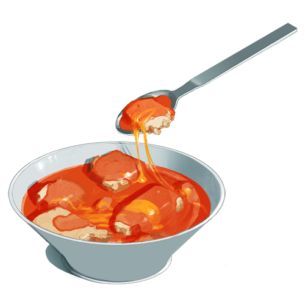

Tomato Cheese on Toast
A Cannon Family Classic serves 2
-Ingredients-
- 1 can Condensed Campbell's Tomato Soup
- 200g Velveeta cheese or sharp cheddar, cut into thin slices
- 1 cup milk
- 4 slices of wholegrain toast (stale bread can also be used)
- Add tomato soup to a medium size pot, then fill the can with milk and also add that. This helps to really clean out the can.
- Heat on medium high until the soup begins to boil, keep stirring it to combine. Should take 5-10 minutes.
- Toast your toast.
- Prepare the bowls with the slices of cheese. Once the soup is ready, pour it over the cheese so it melts. The tear up a slice of toast and also add that to the bowl. Enjoy!